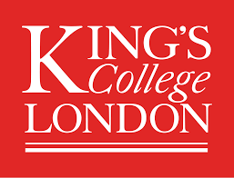

Total Communication Technologies to Support Accessible Communication
TACT is a UKRI Future Leaders Fellowship co-designing new communication technologies with people with communication disabilities.

TACT is a UKRI Future Leaders Fellowship co-designing new communication technologies with people with communication disabilities.

The Gap
Many people rely on gestures, expressions, drawing, and fragments of speech to communicate. Yet many technologies remain rigid, highly verbal, and built around normative assumptions of communication.
20% of us will experience communication disabilities
Royal College of SLTs, 2022
1 in 3 stroke survivors develop aphasia
Stroke Association, 2016
3 children per classroom struggle with speech and language
Speech and Language UK
TACT aims to develop co-technologies which support both verbal and non-verbal communication.
TACT communities
TACT works with two communities whose communication needs are underserved by current technologies. They are co-designers, not just participants.
Aphasia is an acquired communication disability, most often following a stroke. It affects the ability to speak, understand, read, and write. We partner with Aphasia Reconnect and Dyscover to co-design technologies that support these strategies.
1.9 million children in the UK struggle with talking and understanding words. Through Speech and Language UK, we work with secondary school children aged 11–18 as co-designers — bringing their perspectives into the design of technologies that fit their daily living.
The Team
The TACT Team includes researchers in human-computer interaction, accessibility, and speech-language therapy.
Partners
If you want to contact us for collaboration or questions please press the button below to email tact@kcl.ac.uk
Get in touch